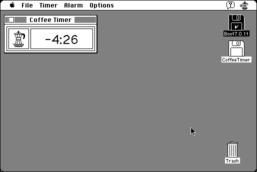

Download
coffee-timer-11-fat.zip (127K) Coffee Timer 1.1 repackaged into a zipped hfs disk image and checksum file. The disk image can be mounted with Mini vMac.
coffee-timer-11-fat.hqx (172K) Coffee Timer 1.1 in the original format.
copyright: Alessandro Levi Montalcini
mod date: Apr 30, 1997
license: shareware
last known url
(gone)
A “countdown timer to keep track of ongoing tasks”.

If you find these downloads useful, please consider helping the Gryphel Project, which hosts them.
Here are the md5 checksums for the downloads, signed with Gryphel Key 5:
--------- GRY SIGNED TEXT --------- a6e013c91b98d4d84f48c608229457ec coffee-timer-11-fat.zip 59134ebc637deaf3d1d5ca16cf374a8b coffee-timer-11-fat.hqx ------- BEGIN GRY SIGNATURE ------- Gry/4Xa8CFcUzxdN/ADIMirebsZI20fWXW+mcYfPUpRb7+R3cYCveOEx2tYHkcrY rvnn0nK0qFm7UkJAck1LuRtfLQtaQK/DSGTwNl0fdud+Bsi7E0Ax6spNJc1/BtwF yb5JB9ODuIKbmej9Jxw6X3AJG/h+nXXnfM1qffoa63rxg51FUH9+l6TTxteKsC96 -------- END GRY SIGNATURE --------